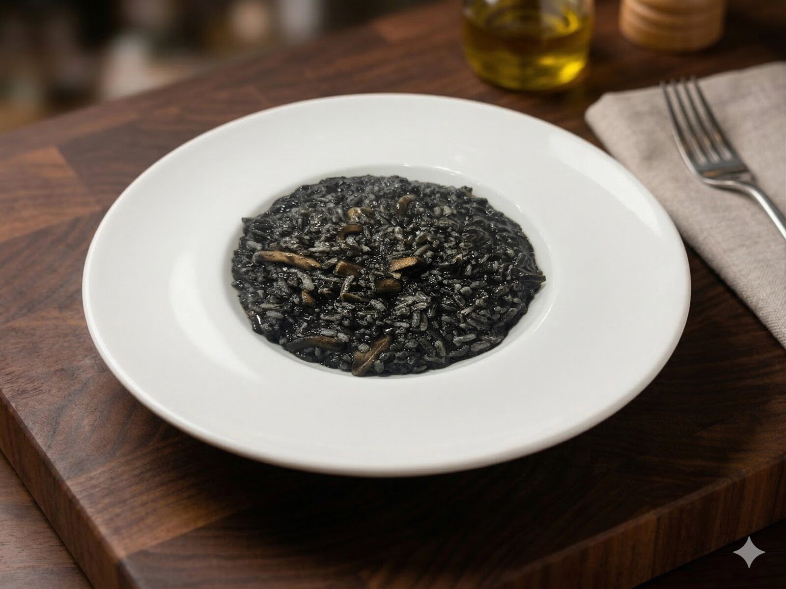
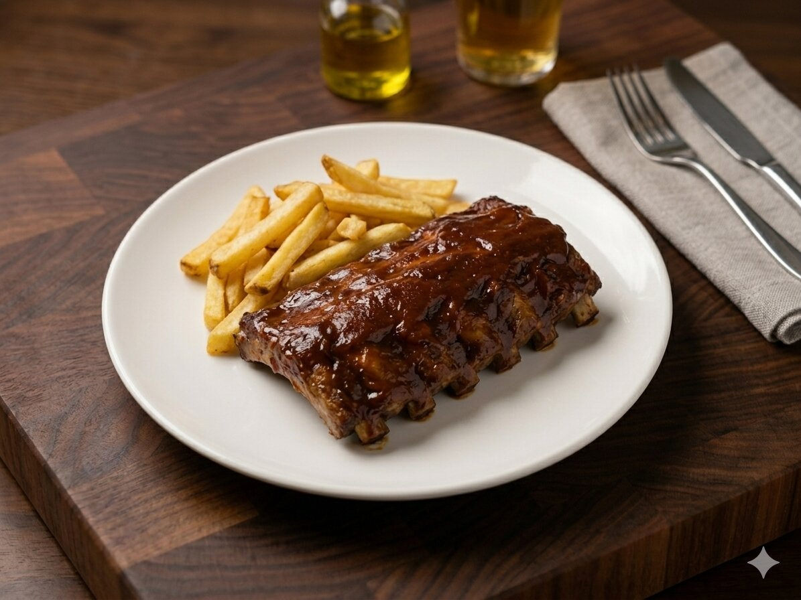
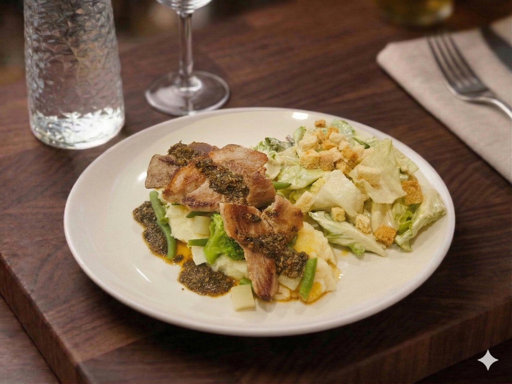
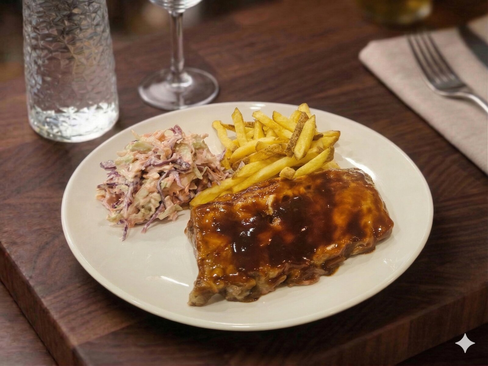

Galería
Comida que entra por los ojos.








Desayunos desde primera hora, menú del día con nivel, take away rápido, delivery y eventos para equipos en la zona Julián Camarillo.
Desayunos que arrancan el día con energía, menú del día que sabe a cocina de verdad, take away para no parar, y un espacio para quedar con clientes, el equipo o celebrar el viernes como toca.

Sabores reconocibles, raciones generosas y tiempos pensados para comer bien entre semana.
Primero, segundo y postre con bebida. Cocina casera que sabe a verdad, cada día.
Platos contundentes para los que vienen con hambre: costillas, secreto, hamburguesas y mucho más.
Pide, recoge en minutos y disfruta sin perder el ritmo de tu jornada.
Arranca el día con energía: café recién hecho, tostadas, tortilla y opciones fit para todos los gustos.
Comidas de grupo, c�cteles, celebraciones... el local entero puede ser tuyo.



En Smithers tienes todo lo que necesitas para comer bien, rápido y a gusto. Tú solo elige, que de lo demás nos encargamos nosotros.